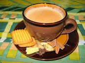

Chai

Follow these steps to make tea aka chai.
Ingridients:
- Milk
- Water
- Sugar
- Aadi idk what to call it in English
- Tea leaves or tea leaves powder
Steps to be followed:
- Preheat the stove gas or whatever the fuck you have
- Put water and milk while it is heating
- Put the sugar as per your need
- Put the tea leaves powder when the milk starts boiling
- If you want to add addi, you can do that as well
- there you go. you made yourself tea. Though I dont recommend drinking chai and i myself dont use it hahahahah
Return to the main page